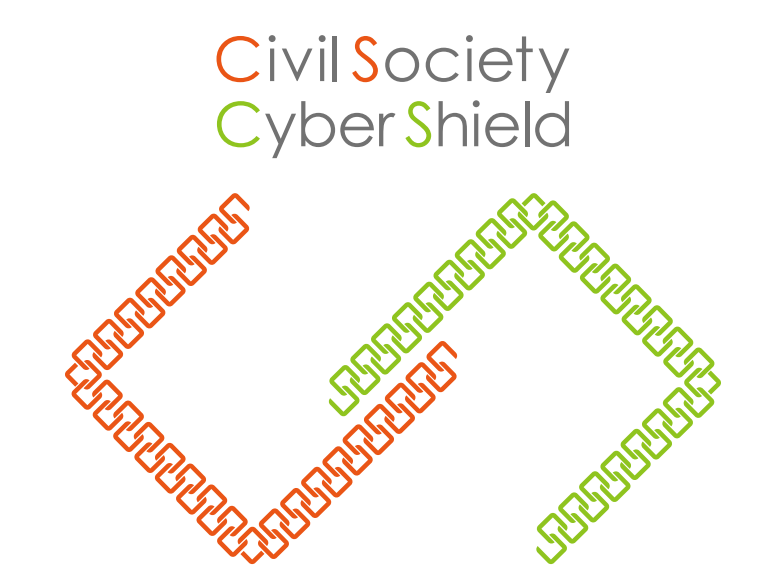

|

Civil Society Cyber Shield (CSCS)
公民團體資安暨隱私交流計劃
台灣擁有在國際間相當知名的開源社群，亦有著極為活躍但面臨風險的公民社會。為了促進這兩個社群之間的交流，2017 年，開放文化基金會國際交流組與華人民主書院、台灣駭客協會、台灣人權促進會共四個組織共同開啟 CSCS 專案：Civil Society Cyber Shield，讓社會運動與組織者能夠接觸最新的資安工具、對抗資安威脅，在安全的線上環境中推動社會議題。
瞭解 CSCS 計畫
Taiwan has internationally-acclaimed open source community and active civil society. To connect these two groups, international affairs section of OCF, New School of Democracy, HITCON, and Taiwan Association for Human Rights developed a project named Civil Society Cyber Shield (CSCS) to help social activists reach the latest information security tools, fight against cyber threats, and promote social issues in a safe online environment.
Learn more about CSCS
|